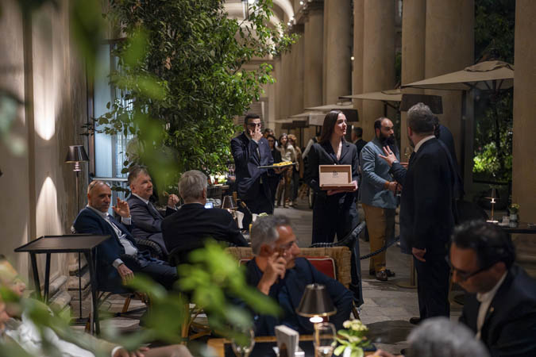

イタリア・ミラノのラ・カーサ・デル・ハバノが開店20周年を迎え、ポルテット・ミラノで記念イベントが開かれました。ハバノスS.A.の公式発表によると、実際の開催は4月23日です。
会場では、デアルト製の記念ヒュミドール（50台限定、ボリバ「ニュー・ゴールド・メダル」20本入り）のほか、イタリア向け地域限定品ラ・エセプシオン「セレクトス・レアレス」ERイタリア2025が披露されました。

写真：Habanos S.A. — ポルテット・ミラノでの記念イベント
イタリア・ミラノのラ・カーサ・デル・ハバノが開店20周年を迎え、ポルテット・ミラノで記念イベントが開かれました。ハバノスS.A.の公式発表によると、実際の開催は4月23日です。
会場では、デアルト製の記念ヒュミドール（50台限定、ボリバ「ニュー・ゴールド・メダル」20本入り）のほか、イタリア向け地域限定品ラ・エセプシオン「セレクトス・レアレス」ERイタリア2025が披露されました。